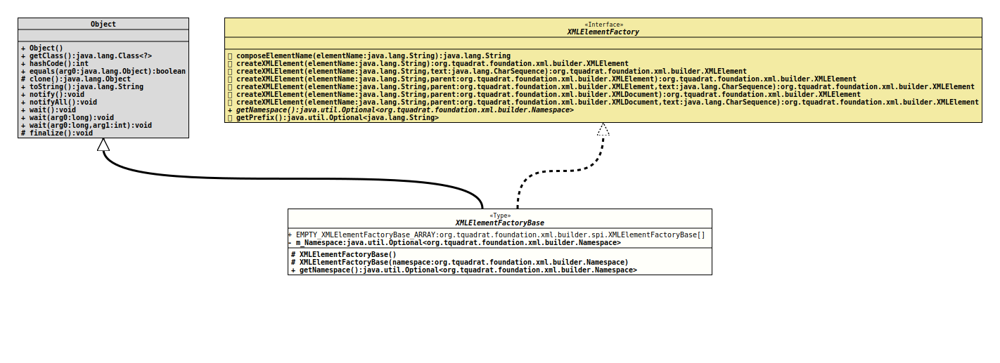

Module org.tquadrat.foundation.xml
Class XMLElementFactoryBase
java.lang.Object
org.tquadrat.foundation.xml.builder.spi.XMLElementFactoryBase
- All Implemented Interfaces:
XMLElementFactory
@ClassVersion(sourceVersion="$Id: XMLElementFactoryBase.java 820 2020-12-29 20:34:22Z tquadrat $")
@API(status=MAINTAINED,
since="0.0.5")
public abstract non-sealed class XMLElementFactoryBase
extends Object
implements XMLElementFactory
The default implementation of the interface
XMLElementFactory.- Author:
- Thomas Thrien (thomas.thrien@tquadrat.org)
- Version:
- $Id: XMLElementFactoryBase.java 820 2020-12-29 20:34:22Z tquadrat $
- Since:
- 0.0.5
- UML Diagram
-

UML Diagram for "org.tquadrat.foundation.xml.builder.spi.XMLElementFactoryBase"
{kind=link}
-
Field Summary
FieldsModifier and TypeFieldDescriptionstatic final XMLElementFactoryBase[]An empty array ofXMLElementFactoryImplobjects.The namespace that is used by this element factory. -
Constructor Summary
ConstructorsModifierConstructorDescriptionprotectedCreates a newXMLElementFactoryImplinstance that does not use a namespace.protectedXMLElementFactoryBase(Namespace namespace) Creates a newXMLElementFactoryImplinstance that uses the given namespace. -
Method Summary
Modifier and TypeMethodDescriptionReturns the namespace this XML element factory was created with.Methods inherited from class java.lang.Object
clone, equals, finalize, getClass, hashCode, notify, notifyAll, toString, wait, wait, waitMethods inherited from interface org.tquadrat.foundation.xml.builder.XMLElementFactory
composeElementName, createXMLElement, createXMLElement, createXMLElement, createXMLElement, createXMLElement, createXMLElement, getPrefix
-
Field Details
-
EMPTY_XMLElementFactoryBase_ARRAY
An empty array ofXMLElementFactoryImplobjects. -
m_Namespace
The namespace that is used by this element factory.
-
-
Constructor Details
-
XMLElementFactoryBase
protected XMLElementFactoryBase()Creates a newXMLElementFactoryImplinstance that does not use a namespace. -
XMLElementFactoryBase
Creates a newXMLElementFactoryImplinstance that uses the given namespace.- Parameters:
namespace- The namespace that is used by this XML element factory.
-
-
Method Details
-
getNamespace
Returns the namespace this XML element factory was created with.- Specified by:
getNamespacein interfaceXMLElementFactory- Returns:
- An instance of
Optionalthat holds the namespace.
-